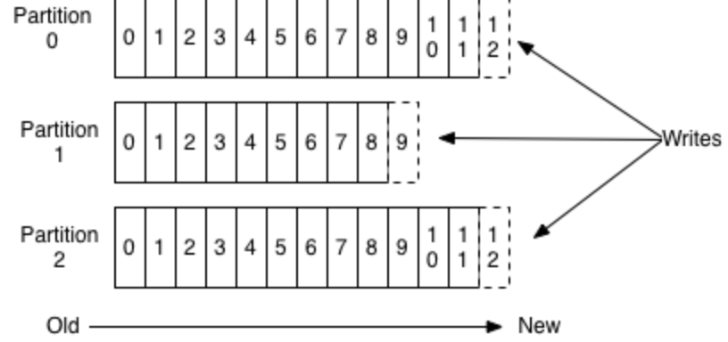
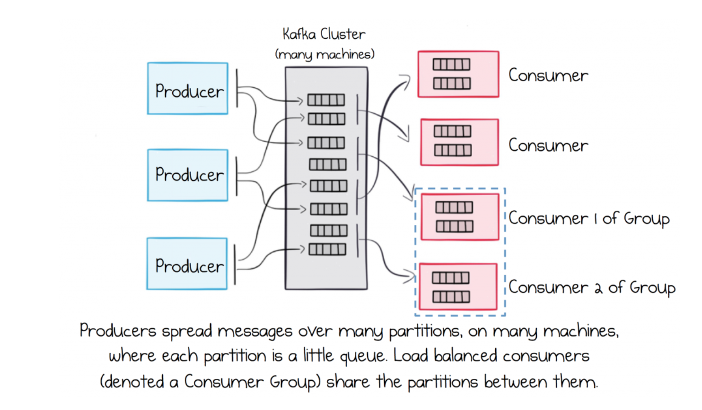

System design
Streaming, Kafka, Publish-subscribe, Message queues
Kafka
Kafka is a distributed and fault tolerant data streaming platform primarily used for building realtime data pipelines that transmit data among services. It aims to provide a high throughput, low latency platform for handling real-time data feeds. There are a number component involved in a Kafka-based data pipeline.
A partition is a particular channel through which data is pushed. One or more partitions together form a topic. Applications can subscribe to a topic and then push messages to a particular partition in the topic. Each partition has a unique sequence ID called an ‘offset’ which is analogous to that of an ‘index’ in an array. A topic can have 0 or more 'consumers' subscribed to it.
Producers are the sources of data that subscribe and push content to Kafka topics.
Consumers are applications that subscribe to topics to consume messages, and consumer groups are logical groupings of consumers which are used to aggregate consumers. Consumers and Consumer groups dictate how messages are consumed in Kafka. Each consumer in a consumer group consumes a message in a way that’s analogous to that of a messaging queue. So the first consumer in the consumer group to get to a message will consume it. By default, it is Kafka's responsibility to partition a topic among the available consumers so that load is evenly balanced. So, if a consumer labelled ‘A’ that belongs to consumer group ‘CG Z’ consumes a message ‘M’ from a topic, then other consumers in consumer group ‘CG Z’ can’t consume the message ‘M’ unless there is a different instance of it in the topic.
On the other hand, the way multiple consumer groups subscribed to a topic consume messages is analogus to that of a publish-subscribe messaging system. This means a message published to a topic is available to all consumer groups subscribed to the topic. So in a way, Kafka combines two forms of messaging systems: Publish-subscribe for consumer groups & messaging queues for consumers in a consumer group.
Brokers are just the Kafka servers or nodes. As a distributed commit log, Kafka stores, receives and sends messages on different brokers.
Kafka as a data structure only supports appends. So every new message is appended to the collection of records in a partition. This property ensures ordering and provides a deterministic processing. This has huge performance implications. Because of this ordering, reads and writes from disk(which Kafka uses to persist data) are constant time operations which means no need to perform seek operation on disks.
Reads and writes don’t affect each other so, writing would not lock reading. What this means is that data size id decoupled from performance. So weather you have a 100kb or 100TB of data in your server, performance is more or less the same.
Kafka itself is not concerned with the content of the messages themselves. Data of many different types can easily coexist on the same cluster, divided into topics for each type of data. Producers and consumers only need to concern themselves with the topics they are interested in.
Kafka also doesn’t keep track of what records are read by the consumer. The consumer group offset moves ahead by one as the consumer reads messages. It's not the broker's responsibility to keep track of that. So to remove a message, there is usually set amount of time.
When it comes to data replication, messages are replicated across multiple brokers to preserve data in case of broker failure. At all times, there is a primary broker known as the ‘partition leader’, and this broker is responsible for application writes and reads from/to partitions. It also replicates data to other brokers. This is why successfully pushed data is guaranteed to be available. You can tune performance and durability by changing the replication factor depending on the nature of the data. In some cases, performance might be more important than strong durability guarantees so the replication factor could be lower.
Metadata information about the leader is stored in a distributed key-value store known as zookeeper. This server is extremely fault tolerant. It stores information such as consumer group offset per partition and partition leader information. Producers and consumers get this metadata from the primary broker they’re connected to. The broker will then have to contact zookeeper to get this information.
So, to recap the flow of data through Kafka, producers append messages or records to a partition in a topic. Every consumer group subscribed to the topic will have access to that message. However, only one consumer per consumer group will get the message. For example, let’s assume there is an application ‘A’ that pushes change notifications to a topic. There are twelve instances of Application ‘B’ that are ready to consume and process these change notifications. Since each instance is in the same consumer group which represents application ‘B’, only one instance out of the twelve needs to pick up the notification and process the changes. However if there is a third application, application ‘C’, that wants to consume change notifications, then it would subscribe to the topic with a different consumer group. This way, we can ensure a single change notification makes it to both applications and is only consumed once by each application.
If data is the lifeblood of any system, Kafka is the circulatory system. So just like healthy blood vessels and a healthy heart are required for optimal blood flow, it’s important to tune and configure consumers and producers properly to ensure there is proper data flow. So for Kafka to excel, the entire data pipeline(producers, Kafka, consumers) need to coordinate and work seamlessly. Otherwise, we’ll end up with situations where consumers can’t keep up with incoming messages. Consumer lag measures how far behind a consumer is from the most recent offset. Significant consumer lags may even result in data loss of the oldest records in the topic. Some records’s time in the topic might exceed the retention period so those records might be deleted prior to consumption. So, it’s ideal to have all components working together so they respond automatically to events such as increased data flow rate, failure of producers and consumers and so forth.
It is important to remember that all consumers in a consumer group work in a load balanced mode. So, if a topic has 6 partitions and 6 consumers per group, each consumer in that group should be assigned a partition. If a consumer goes down, Kafka will perform partition rebalancing to reassign consumers to a partition. Since there are more partitions than consumers, there maybe a consumer that consumes from more than one partition.
Frequent partition rebalancing could potentially disrupt the proper flow of data through the pipeline. Every time there is a change in the consumer group, Kafka will rebalance partitions. So, to properly scale consumers up or down with minimal disruption, the consumer can use the Kafka API to assign static partitions and also perform manual load balancing. This is particularly helpful if you set the consumer to autoscale based on the consumer record lag. In most cluster management services such as ECS or Kubernetes, it is possible to use custom metrics set up and exposed by the deployed application. By default, there are some metrics available in these services that trigger autoscaling such as CPU utilization and memory usage. However, it is possible to integrate consumer record lag and use that metric to autoscale the consumer applications.
Scaling consumers is limited by the number of partitions in the topic that the consumers are subscribed to. Since by default, load is evenly balanced among consumers, scaling up consumers beyond the number of available partitions in the topic wouldn’t do any good. So it’s important to think about the appropriate number of partitions while setting up the Kafka infrastructure.
When pushing records to topics, it is also important to use a random partitioning scheme to make sure data is distributed as uniformly as possible. Otherwise, some consumers will end up consuming more messages than others since data is not evenly distributed across partitions.
So it’s important to take into consideration the nature of data flowing through the pipeline, and also analyze resources producers and consumers are using when configuring Kafka components. For example, if you have a consumer that consumes messages from a Kafka topic and subsequently updates a DB shard, it might be useful to play around and tune consumer properties such as ‘maxPolledRecords’ which represents the maximum number of records pulled from the topic and ‘poolSize’ which determines the number of records to process concurrently from the polled records. You can fine tune these two settings in this particular case to have multiple consumer threads concurrently consume messages and update shards independently. It might also help to compare and contrast the performance when playing around with the number of consumer threads and the number of shards.
Another important use case to consider when tuning consumers is is back pressure. It may be wise in some situations to have consumers consume into a fixed size buffers to prevent too much data from being polled by the consumer on to the heap and prevent unnecessary amount of time spent on garbage collection. Prolonged garbage collection pauses is another thing that can cause consumer group rebalance.